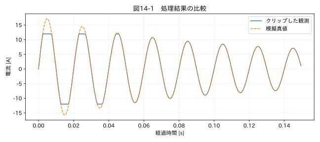

第IV部 センサーデータ特有の問題 / 第14章
この章の節
飽和・レンジオーバー・量子化
学習目標
飽和によって失われる情報と、量子化による分解能の制約を理解する。張り付きが確認された値を、正確な上限値と解釈しない。
14.1 起動電流がいつも12 Aになる
モーターの起動電流を測ると、異なる試験でも最大値が12.000 Aでそろった。再現性が高いのではなく、測定レンジ上限に達していた可能性がある。山の先端が平らになる、同じ上限値が連続する、レンジオーバーステータスが出る、といった情報を確認する。
教材 04_current.csv は50 Hzの電流に、減衰する起動時の包絡線を掛けた信号である。±12 Aでクリップしているため、最初のピークは記録上12 Aに制限される。真値を持つ教材では差を見られるが、実試験のクリップ波形だけから本来の最大値を復元できるとは限らない。
14.2 分解能と精度
フルスケール幅RをNビットで表す理想的なADCを考えると、量子化幅の代表値は q = R / 2ᴺ となる。端点の符号化方式によっては分母を2ᴺ−1とする記述もあり、データシートの定義を確認する。±12 A、12ビットならR=24 A、q≈0.00586 Aである。
丸め誤差が−q/2〜q/2の一様分布で、信号との相関が無視できると仮定すれば、標準不確かさは q/√12 となる。これは理想化したモデルで、低振幅の周期波形や静止入力では量子化誤差が信号に相関する場合がある。分解能が高いことは、校正精度が高いことや帯域が広いことを意味しない。
14.3 飽和を候補として検出する
既知の上下限と一致する値、上限近くの値が続く区間、機器のオーバーレンジコードを調べる。上限と一致しなくても内部のアナログ増幅器が先に飽和する場合がある。また、実際に制御されて一定の値になっている現象もあるため、固定値だけで原因を確定しない。
浮動小数点の近似値を扱う場合は、量子化幅や出力桁に基づく許容差を設定する。「上限の99%を超えたら飽和」という規則は一般則ではない。レンジに近い正常値と実際のクリップを区別して記録する。本書のアプリのsaturation設定は宣言された数値との一致を候補にする簡易方式で、機器固有の状態ビット処理は追加実装の対象になる。
関連する詳細実験は実践補講に掲載。入力形式・同期・補間・校正・多変量・チャンク境界を扱う。
実行するコードと結果
run.py · 共通処理の全ソース
教材フォルダで python examples/chapter14/run.py を実行。以下は省略のないスクリプト。共通モジュールは教材一式に含む。
from pathlib import Path
import sys
ROOT=Path(__file__).resolve().parents[2]
sys.path.insert(0,str(ROOT))
sys.path.insert(0,str(ROOT/'examples'))
import numpy as np
import pandas as pd
from common import load,truth,seconds,plot
from tsclean.core import numeric,timestamps,time_flags,hampel,freeze_candidates,interpolate_short,compare
df=load('04_current');x=df['測定値'];y=truth('04_current').latent_signal
sat=x.abs().ge(12)
q=24/4096
print('飽和候補数:',int(sat.sum()),'12bit量子化幅 [A]:',q,'一様誤差モデルu [A]:',q/np.sqrt(12))
print('記録ピーク:',x.abs().max(),'模擬真値ピーク:',y.abs().max())
plot(14,seconds(df)[:300],{'クリップした観測':x[:300],'模擬真値':y[:300]},'電流 [A]')
検証環境での実行結果を開く
飽和候補数: 35 12bit量子化幅 [A]: 0.005859375 一様誤差モデルu [A]: 0.0016914558667664819
記録ピーク: 12.0 模擬真値ピーク: 17.2123698166

14.4 失われた最大値を扱う
図14-1では、模擬真値の鋭いピークが平らになっている。単純な上限クリップで、雑音や校正誤差を無視できるなら、正側の真のピークは少なくとも12 A以上といえる。しかし正確な値は分からない。統計的には打ち切りを受けた観測として扱う考え方がある。
補間で丸い山を作っても、それは波形モデルを仮定した推定である。起動電流の合否判定に使うなら、より広いレンジの測定、異なる感度のセンサー併設、試験条件の再現などで確認する。クリッピングは高調波も作るため、FFT上の高周波成分をそのまま実現象と解釈しない。
14.5 桁落ちと保存形式
大きな二つの値の小さな差を求めると、有効な桁が少なくなる。さらにCSVへ小数第1位までで保存すれば、後から高精度の演算へ戻しても失った桁は戻らない。原ファイルの出力桁を守り、報告書の表示丸めは最後に行う。タイムスタンプの小数秒をExcelへ出力する場合も、内部精度と表示精度を別に確認する。
演習
基礎演習
飽和候補数、記録最大値、模擬真値の最大値を確認する。
応用演習
同じ±12 Aの16ビットADCの量子化幅を求める。12ビットに比べて飽和は減るか。
実務演習
要求値15 A以下に対し、±12 Aレンジで測った最大値が12 Aだった。合格と判断できるか。
演習解答・解説を表示する
基礎：数値は掲載出力と照合する。記録最大絶対値は12 Aであり、模擬真値のピークはそれより大きい。
応用：24/65536≈0.000366 A。分解能は細かくなるが、同じ±12 Aならレンジ超過は解消しない。
実務：判断できない。真値が12〜15 Aか15 A超かを区別できないため、レンジを広げて再評価する。
章末まとめ
飽和は値の修正で解決できるとは限らない情報損失である。レンジと分解能を区別し、クリップされた値を正確なピークとして使わない。